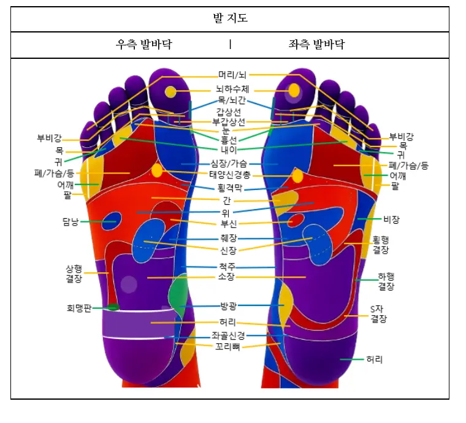
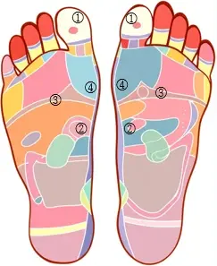

RIGHT · FOOT
오른발 발바닥
교재 27쪽 · 기본 지도 보호
100%

NovaCell 회원 이용권을 확인하고 있습니다...
Hand & Foot Reflexology Learning System
손·발 반사구 지도와 교재 기반 계통별 프로그램을 연결하여
위치를 배우고, 작업 순서에 따라 세션을 진행할 수 있습니다.
교재 기반 교육·자가관리 보조 도구이며 의료적 진단과 치료를 대신하지 않습니다.
BOOK-BASED WORKSPACE
교재 기본 지도는 보호되며, 전문가 모드에서 추가한 포인트만 이동·삭제할 수 있습니다.
RIGHT · FOOT
교재 27쪽 · 기본 지도 보호

PROGRAM LIBRARY
8개 대분류를 선택하면 교재 제3장의 29개 소분류를 확인할 수 있습니다.
TEXTBOOK PROGRAMS
GUIDED SESSION
프로그램에서 시작 버튼을 누르면 작업 순서가 나타납니다.

전체 지도가 표시됩니다. 마우스나 손가락으로 움직일 수 있습니다.
HISTORY
NOVACELL EDUCATION CENTER
교재 내용을 학습하고, 그림 퀴즈와 실기평가로 익혀 보세요.
IMAGE QUIZ
PRACTICAL TEST